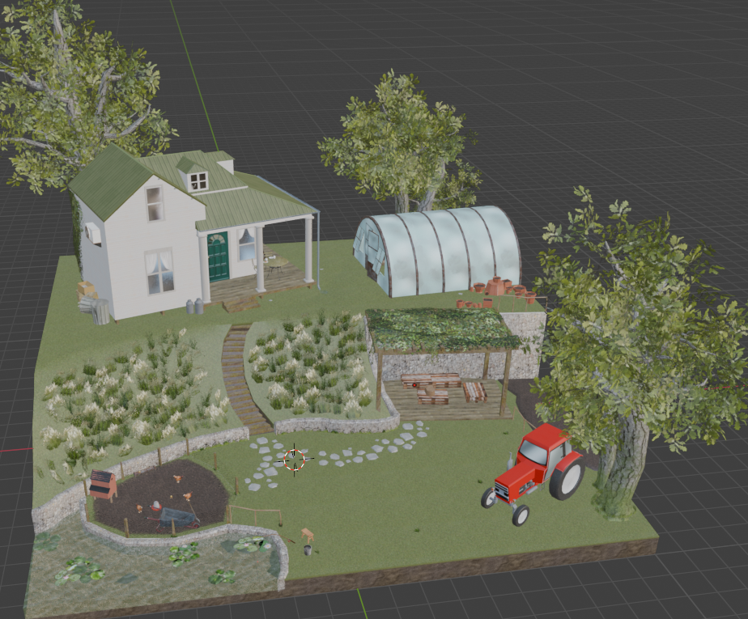

Small farm diorama
A diorama of a small farm house with a garden.
Interactive 3D Model
Project Information
Type: 3D Project
Tools: Blender, Photoshop
Duration: 2 weeks
Team: Solo
My Role: 3D Artist
About the Project
This project was a retake I had to do for the 3D1 class at Howest. The original project was a diorama of a beach house, but it barely did not pass. As a second try I decided to make a diorama of a small farm house with a garden instead. I uploaded both projects on my sktchfab and portofolio so i can show off how I improved my skills in 3D modelling and texturing. I had a way better plan before I started this project, in contrary to the previous one. My modeling skills and tecturing skills improved a lot and I also got to realise that small details can change the scene a whole lot.
Development
The developpement had to go way faster than the previous project, as I only had a month at max to finish it. I came across quite a few hurdles during the modeling texturing and making the details, but even though I had to overcome them, it went way better than the beach house. But everything might have gone too smoothly as I decided to reuse the tractor asset from an earlier excercise. At the time i thought i had fixed the issues with it, but now I realise this is the worst part of the diorama. Im quite happy with how the other parts turned out. Especialy the garden, it looked very bland and flat in the beginning, but after addign grass, vegetation and a few details it looked way better.
